Reporting
Getting data loaded into a flashy new system doesn’t really mean anything unless you’re able to consume all of that data in a meaningful, easy-to-read, and elegant manner. OneStream has an abundance of ways to present information, based on the customer-provided reporting requirements.
So, what are reporting requirements? Simply put, customers answer the question, “When do which
Users need to view what data?”
These requirements will obviously include the monthly, quarterly, and yearly reporting packages at varying levels, depending on the audience, but they’ll also include any data to be reviewed throughout the various data submission processes. In a nutshell, reporting requirements answer when, who, and what. Together, you need to determine the ‘how and where’ and recommend the best methods – there are usually more than one – to present the data, given those requirements.
Reporting
Determine the Reports to Build
Prior to endorsing any reporting methods, you must determine all of the Reports you need to build. To do that, I recommend building a Report Inventory of every Report, big or small, that Users view at any point within (or upon completion of) their data submission process.
A customer with 13 business units produces a Balance Sheet, Income Statement, and Statement of Cash Flows for each BU along with a fully consolidated version of each. The 13 BUs plus the consolidated version equates to 42 Reports! After a bit of analysis, all of the rows and columns are the same for these Reports, with the differentiator being the BU. You would know to narrow this down to three Reports, with some type of mechanism to vary by BU (which will be covered later in this chapter).
In another example, a customer may have a User who enters long-term debt rollforward data into a Form. That User must look at some type of Report to ensure that the data entered validates to the activity of each of the accounts. You have a number of options to make this User’s process less painful (assuming we all think manual data entry can be somewhat painful). You could present a Report showing the validation, or you could build that validation directly into the Form so the User can view it in real-time as they enter data. Either way, these are Cube Views, and you know that they should be presented to the User while they’re entering data rather than letting them get three steps further into the process to ultimately discover that they need to go back three steps to correct an error.
A final example could enable a Planning User to view a full Report of KPIs just as they’re updating driver data in one of their forecasting models.
Include any visuals, charts, or graphs in the Report Inventory that will be required in annual Reports, executive decks, or self-service Dashboards for End-Users. Many projects prioritize visuals lower on the list due to them being ‘nice to have’. I would argue that visual data provides clarity to a dataset, and should therefore be prioritized like any other element. Yes, the visual underbelly is the data itself, but I would much rather look at a trending line graph than a matrix full of numbers.
The bottom line is that the more complete the Inventory, the better the analysis and results of what Reports need to be built, how they’ll be organized, and when they’ll be presented to the User.
Reporting
Reporting Options
Now that you’ve got a complete listing of all Reports that need to be built, you need to determine and recommend the most optimal way of presenting them to their respective audiences.
The first question to ask is, “Will the Users of this Report have a OneStream license and have the ability to interact with the data?” This will lead you down one of two paths: one path grants the User the control to view, navigate through, and explore data as they’re trying to understand and interpret it; the other path results in a package of static, predefined Reports that may generate questions upon which the User depends upon a licensed User to explain any detail external to the presented dataset.
Assuming that the User will have a license, the second question to ask is if that person will be submitting data during the data collection process or if they’ll only be consumers of the data. This is important because it will drive out those Reports that need to be presented at some point during the process. I’ll explain further when we talk about Cube View groups and profiles.
Expanding on the previous section (where you determined that you have three Reports), where should you build them – a Cube View or Dashboard, or an Excel/Spreadsheet Quick View or Retrieve? You have so many options; it’s sometimes difficult to determine what’s best for the customer. In the following pages, you’ll read through the characteristics and capabilities of each to help you select the best solution for your use case.
Reporting
Cube Views Overview
By now, you are probably familiar with Cube Views and when and where you use them. Maybe you’ve built some yourself and have learned (the hard way) some of the topics that will be covered in this chapter. From those of you who are tasked with building your very first Cube View, through to seasoned Cube View veterans, you’ll hopefully pick up a trick or two.
Reporting
Determine Cube View Build Items
You’ve got your Report Inventory, and you’re ready to start building your Cube Views – but you’ll need to hold your horses! You’ll want to spend some additional time analyzing the Inventory – just as you did when you noticed that of the 42 Reports, you only really need three.
Look for similarities or consistencies in rows and columns. Maybe all of the trending Reports start with the final month of the prior year and run through the current reporting month. Maybe the variance Reports compare Actuals to Budget and Actuals to Forecast but not both in one Report. Maybe you notice that some variance Reports have the same columns ordered differently, depending on the Report. In all of those cases, you know that you’ll need to build each of those column sets, but in the last case, you could challenge the customer to take this opportunity to standardize things by ensuring that columns are always in a specific order. If they’re open to it, great! You’ve just lightened your workload.
While analyzing the columns, spend some time on the row sets, too. It’s the same type of exercise. Is there a consistent, detailed Account Report? Is there a consistent, summarized Account Report? Are there KPI or statistical Reports that share the same or similar row sets?
Sometimes consistencies and standards don’t exist in the customer’s current Report Inventory, but they’re hoping that OneStream will help resolve this for them. It presents a great opportunity for you to help establish standards and simplify their reporting.
In addition to the rows and columns, also note the Dimensions that don’t change by Cube View. For example, the customer’s Balance Sheet always looks at all departments because it doesn’t make sense to them to break down by their Accounts Payable balances by department. If department in OneStream is UD1, then you know that the total UD1 Member will be used in the POV section of the Cube View. From a maintenance perspective, having the correct Members set on the POV of the Cube View allows the Cube View creators to quickly know which Dimensions will be listed or required in the rows and columns.
Report formatting may seem like a trivial piece of building Reports when, in fact, it’s generally the opposite. I’ve been on numerous projects where I’ve asked for the formatting requirements and then received the response, “Whatever is the default in OneStream is fine.” Zero times has
OneStream’s default been fine! It’s not that the default settings look horrible; it’s just not how the customers want to see their data. You can customize the look and feel of the Reports specific to their requirements.
Headers are important because Users need to understand the data they are viewing. It doesn’t present well when all of the Dimensions are listed out in the Report name or page caption. Footers can be useful for page numbers, User IDs for who ran the Report and when, etc. I think we all know the benefits of using footers. Consistent headers and footers across all Cube Views really give the customer their own customized standard look and feel to OneStream Reports.
Another important standard for the customer to establish is the formatting of the data itself. Scaling, percentages (to how many decimals), and KPIs (to how many decimals) are all examples of those standards.
Why am I harping on at you to establish formatting standards so early in the build? Once the standards have been set, you can use Dashboard parameters to format your Cube Views instead of formatting each one individually. Should the standard change at some point in the future – the customer wants to go from one decimal to two – the Administrators only need to change the parameter, and it will flow through to all of the Cube Views where that parameter exists. No more clicking through each Cube View to update the formatting of data or headers! That will be covered later in this chapter as well.
Your customer has Scaled Reports, and they perhaps need everything to foot and cross-foot, so there’s a rounding component. Believe it or not, this topic creates heartburn on many projects. The debate centers around whether you should store rounding data in the database or just in the Cube View. OneStream strongly recommends that you build rounding into the Cube View. If the customer insists on storing these amounts in the database, it will require bogus Members to store the data. It will require complex Business Rules or Member Formulas to calculate the rounding data. Both of these will impact overall application performance and potentially create hundreds or thousands of data points that hold no value. Additionally, any changes to the metadata structures will impact both the rounding Members and the Business Rules. On a past project, a customer asked me to “bless” the rounding rules, but I was unable to do so since I strongly opposed the decision. Customers looking to stray from OneStream’s recommended approach happens occasionally but, when it does, the customer needs to know and acknowledge that it’s not a recommended practice.
Reporting
Establish Cube View Components to Setup
OK, so you’ve now determined build items – row/column sets, POVs for each Cube View, formatting, rounding, and Navigation Links. Let the build begin!
Start by creating Cube View Groups that will contain your row and column sets. Sometimes there are only two – one for rows and one for columns. But you may want to break these up depending on the different types of row and column sets. You want to avoid duplicating identical sets since it will not only potentially confuse the Administrators, but also increase the maintenance when changes are needed.
A second type of Cube View Group will contain those Cube Views that will be presented during the data submission process (versus those that are run once all data is final). These Groups are then added to Cube View Profiles where necessary.
Cube View Profiles can be defined as groupings of Cube View Groups. You add these to Workflow Profiles to present Groups of Cube Views to the User during their data submission process. For example, upon a sub-Consolidation, the User wants to review the results for some key Reports. Those Cube Views are maintained in one or more Cube View Groups, but you add those Groups to a Cube View Profile and attach it to the Workflow Profile step. Those Cube Views then appear in the Analysis section during the process (See Figure 10.1). This is why it’s important to know which Cube Views will be run upon completion of the data submission process, and which ones will be presented during the process. I’ll cover this in more detail in the next section: Organizing Groups and Profiles.
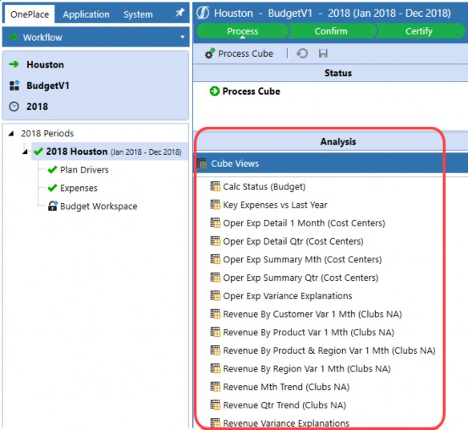
Figure 10.1
You’ll also set up non-Cube View Components that will aid you in building the Cube Views as dynamically as possible. You’ll want to create a customer-specific Dashboard Maintenance Unit that will contain the Cube View parameters that you identified during the Report Inventory analysis.
As I previously mentioned, two common uses for parameters are the pop-up prompts that the Users select when they run the Cube View, plus the formatting text for Cube Views. You can put them both into the same Dashboard Maintenance Unit or create separate ones for each. Again, it’s important that you’ve already established a logical naming convention for the parameters and the Dashboard Maintenance Units to ease navigation and maintenance.
The next couple of items were presented in the Business Rules chapter but should be mentioned here as they’ll likely be used extensively throughout the Cube View build. As a refresher, I’m speaking of XFBR and Member List Business Rules. These provide an additional advanced mechanism for Cube View builders to create dynamic Cube Views. For example, take a customer column set that contains two columns – one for the Current Forecast and one for the Prior Forecast. The Current Forecast is anchored on the Workflow. The Cube View should know what the Prior Forecast is, based on the Current Forecast – in other words, the User shouldn’t have to specify both the Current and Prior Forecasts; OneStream should be able to logically know the Prior Forecast based on the Current Forecast selected. This is where the XFBR Business Rule comes into play. You call the rule from column two and send the Current Forecast to the rule as a variable. The rule takes that variable (Current Forecast) and – based on the logic – will return the Prior Forecast.
In addition to XFBR Business Rules, you’ll likely use a Member List Business Rule to return the Members you want to show up in a Cube View. An example of this would be if you’re writing a Top 20 Customers Report. Maybe you want to list them out by sales in descending order. You would write the Member List Rule and, again, call it from the Cube View. It would run the logic in the rule and return your customers in descending order.
The thing to remember about these rules is that they run and return Cube dimensionality. They don’t run any data calculations; they tell the Cube View the Dimension Members from which to pull data, not the data itself. Should you need data calculations, you have a couple of options – Cube View math or UD8 Dynamic Calculation Members. Which one is better and when do you use each?
Before answering these questions, I’ll define each of them. Cube View math takes one row or column and adds, subtracts, etc., from another row or column. For example, column one contains Actual data, and column two contains Budget data. Your variance (column three) could be set up with Cube View math that subtracts Actual from Budget. An example of it being used in rows might be taking an expense line in the P&L and dividing it by the total sales line to produce a percentage of sales line.
Alternatively, UD8 Dynamic Calculations can also handle both of the above examples. Most applications ‘reserve’ UD8 to hold these dynamic reporting Members. The Administrators create these Members and write Member Formulas on each. The resulting data calculates every time the Member is called in a Cube View rather than storing it in the database. As previously mentioned, Dynamic Calculations take any Dimensions that aren’t found in the Member Formula from the Cube View from which they’re called. Going back to my variance example, you could set up an Actual to Budget Variance UD8 Dynamic Calculation, and the Member Formula would subtract Actual from Budget. You could do the same with the percentage of sales example. You use these UD8 Members on their respective rows or columns instead of None.
Back to the initial question, “Which one is better, and when do you use each?” Cube View math is straightforward and easy to read/write in the Cube View – no VB.NET knowledge required! One downside of having to write it into each row or column set is that you could be writing this multiple times depending on the number of templates or Cube Views that require that calculation. This increases the risk that the calculation differs amongst them. It also increases maintenance should the calculation change. Additionally, all pieces of the calculation must exist in the Cube View in order to use Cube View math. I’ve seen many decks and Reports that present KPIs without the underlying data from which they’re derived. Using Cube View math to write a Report like this would mean adding rows and/or columns with the data used for the calculation and suppressing them, so they’re hidden on the resulting Report. By doing this, you’ve got a number of rows or columns that will never be shown but are necessary to provide the resulting calculation. This can confuse Administrators and Super-Users who need to make future modifications to the Cube View.
On the other hand, UD8 Members contain Member Formulas, and you just need to add them to any Cube View. This method ensures consistency across all Cube Views using it. The Administrators can also add a Member Formula for drilldown that provides End-Users with the ability to see each component of the calculation should they drill down on the calculation. There’s always a downside and – here – the Administrators need to know some basic VB.NET.
I lean towards using Dynamic Calculations from the start for all of the benefits I previously mentioned. However, the use case and customer requirements can drive me to use Cube View math. I make three high-level assessments that help clarify this:
Do multiple Reports present the calculation?
Are all of the components that comprise the calculation also presented in the Report?
What does the Report layout look like?
The first two points make sense, but what do I mean by point three? Take, for example, a Report with Actuals in one column and the P&L Accounts in the rows. In column two, the customer wants to show the percentage of sales on every row. Cube View math would be difficult in this case because the calculation differs on every row.
A second example (again taking a Report with Actuals in one column and the P&L Accounts in the rows) might present gross profit percent at the very top. You could use Cube View math or a Dynamic Calculation since either one easily produces the calculation.
An additional, fairly infrequently used reporting question to ask the customer is if they want to display Dimension descriptions on their Reports in multiple languages – OneStream calls these Culture Codes. The maintenance impact requires the Administrators to ensure that all Members, Cube Views, and any parameters, contain descriptions for all enabled cultures. It may also impact Business Rules or other elements that reference the Member description rather than the name. This can be cumbersome but can be done given the requirement. OneStream recommends matching the Window’s Regional Settings of the Users’ primary computers to what you set up in the OneStream configuration. The customer’s IT department or OneStream Azure Team will need to modify the server settings on the Application Server Configuration File for the Culture Codes to work properly. The Culture Codes do not apply to any native OneStream menu items, which means that Users will still see them in English regardless of the Culture Code assigned.
To review, the Components you will likely use during your Cube View build are Cube View Groups, Cube View Profiles, a Dashboard Maintenance Unit that will contain parameters, an XFBR Rule, and possibly some Dynamic Calculation Members in UD8 or any other Dimensions. You can set up all of these Components as you build your Cube Views rather than building them all upfront. They’re just things to keep in mind as you go through your build.
Reporting
Organizing Groups and Profiles
As I mentioned earlier, Cube Views are organized into Cube View Groups and Cube View Profiles. This section goes into more detail about how to think about the organization of the Groups and Profiles.
The two main drivers of how you set these up are usage and security. Earlier, I mentioned that you should set up one Group for your row templates, and a second Group for your column templates. This allows the Cube View Administrator and any Super-Users who will be creating Cube Views to easily find them. This is one example of addressing the usage of the Cube Views in the Group – they’re all row or column templates that will be shared among other Cube Views.
Another Group should contain the Cube Views that only the Administrators will access – again, usage. Additional Groups that fall into the usage category are Groups that will contain Cube Views used during the data submission process. Depending on your Workflow design, you may need more than one Group for these Cube Views. It’s also helpful to set up Groups that will contain Cube Views in development or old Cube Views that are no longer used.
Finally, you should set up a Group that contains standard Reports that all business units will use once all data has been submitted. It may be helpful to set up additional Groups by business unit (if each has a group of Super-Users who will build Cube Views specifically for their business unit), for Data Entry Forms, for Dashboard-specific Cube Views, for foreign entities, and for corporate-only Reports.
Regarding security, each of these Groups can be secured to grant access (who can view the Cube View) and maintenance (who can modify the Cube View). It’s important to determine those two security groups because Cube Views cannot be secured by individual Cube View, only by Cube View Group. For example, you don’t want Business Unit B’s Super-Users modifying Business Unit A’s Cube Views. You also don’t want any business unit Super-Users modifying any of the corporate or standard Cube Views. These would all need to be in separate Cube View Groups.
Another example would be having a Group of standard/corporate Cube Views that the customer wants to allow only Administrators to manage.
Once your Cube View Groups have been set up and contain respective Cube Views, Cube View Profiles bring them together for use throughout the Workflow. Maybe Business Unit C only uses the standard Reports – you’d set up their Profile and add the standard Reports group to it. Business Unit A has their own Group, but they also need to view the standard Reports – you’d set up their Profile and add the standard Reports group and Business Unit A group to it. You can see that this allows for mixing and matching groups into Profiles, so every business unit is able to run the Reports specific to them rather than having to navigate through a massive list of Cube Views to find the few that apply to them.
Like Groups, security can be applied to Profiles, too. There’s also a visibility property on Profiles. This allows the Administrators to hide the Cube Views within the Profile from different places in OneStream (always visible, never visible, visible only in OnePlace, Dashboards, Excel, Forms or Workflow, or a combination of any of these). This property applies to the entire Profile, not specific Cube View Groups or Cube Views. You may want to hide all Cube Views on the OnePlace Cube View pane and, in that case, would exclude OnePlace in the visibility property.
Reporting
Exploring High-Level Advanced Cube View Properties
You have some advanced Cube View properties available to use, if applicable. These don’t necessarily need to be identified prior to the build but will assist all Users should you decide to use them. I’ll highlight three of the most useful and common properties.
Navigation Links allow Users to navigate directly from one Cube View or Report to another. For example, the customer wants to start with one of their high-level BU P&Ls and from the sales line they want to see more detail by UD1 – you can build both Cube Views and create a link so a User can generate the detailed Cube View directly from the high-level Cube View. It’s a way to provide some ‘drill’ capability in a more reporting-friendly way to both licensed and non-licensed Users. Again, these are commonly used when Users need to quickly jump from one Report to another.
List Parameters in Cube Views are a handy tool to allow Users to select from a dropdown menu to enter data that doesn’t relate to any of the metadata. For example, the customer wants the data submitter to control whether a specific rule should run during the calculation of an Entity. Perhaps they only want the rule to run prior to reviewing the results of that Entity but not every time throughout the process. You need a mechanism to trigger (or flag) the rule to run. Since OneStream only stores data at specific metadata intersections, you’re unable to store text like “run” or “don’t run”. Instead, the data could be a 1 for “run” or a 0 for “don’t run”. This can be confusing and not intuitive for a User to remember, especially in cases where the main data submitter is out of the office, and the backup person needs to complete the step. This is where the List Parameter comes into play. The Administrators can set up a parameter that presents the two options from which the User can select. In the background, the data that’s stored is a 1 or 0 based on the User selection (See Figure 10.2).
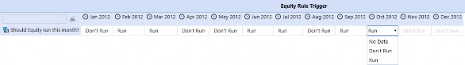
Figure 10.2
The last component to keep in mind is Cube View Extender Rules that were covered in the Rules chapter. A number of use cases would include advanced formatting or varying images and moving/removing headers or footers by Entity or Cube View.
Reporting
Basic Build Principles
This section focuses on common Cube View build principles. These aren’t hard and fast rules, just more information for you to make educated assessments and address your specific business requirements accordingly.
It’s important to determine a standard Cube View anchor. This subject isn’t as heavy as it may sound. Basically, anchoring is determining a common or standard way for your Users to run the Reports. Different customers have different preferences, but if you mix and match anchors among Cube Views, it adds complexity. For example, in Cube View 1, the User knows they need to change their POV to see a specific dataset, while on Cube View 2 the User knows they need to change their Workflow Profile to see a specific dataset. Consistent anchors allow the User to navigate to their dataset regardless of the Cube View they’re running.
The three main anchors are setting the POV to reference the Workflow, the User’s individual POV (right-hand pane), or a parameter that produces a pop-up window for the User to make Dimension selections at runtime. There are benefits and detriments to each one.
Setting the anchor on the Workflow allows Cube Views to use it as a reference for Scenario, Time, and possibly Entity. The idea is that because the User selects a Workflow to complete their work, the Cube Views they’re running will likely relate to that Workflow. By anchoring them on Workflow, the Users won’t need to select these Scenarios, Time, or Entities because OneStream knows they’re already in the Workflow. The downside of this is that if they’re not in a month-end situation and want to run a Cube View for a past time period, they would first need to change their Workflow in order to see data for that particular time. At a minimum, any Cube Views used for data input should be anchored on Workflow.
Setting the anchor on the User’s POV allows the User to open their POV pane to select any Dimensions for which they want to see data. Yes, it’s simple enough to open that pane to ensure it’s correct when they’re completing their work; however, it can cause confusion if their POV is set to a Time period for which they’re not completing their work. So, you go back to anchor all data input Forms on Workflow. Now you’ve got some Cube Views anchored on Workflow (data entry Forms) and some Cube Views anchored on POV (Reports or schedules). Users will need to remember this should they need to go back to a prior period to view a data entry Form.
Using parameters to prompt the User for Dimensions at runtime is also commonly used. I would not recommend pairing this with anchoring on the POV. As a User running a Cube View with a prompt, I select Dimensions for which I want to see data. If any Dimensions are left out of the prompt, I need to now go to my POV to select them. It doesn’t make a lot of sense to require the User to select Dimensions via two methods for the same Cube View.
I generally use a combination of anchoring on Workflow with runtime parameters. This way, the User avoids ever having to go to their POV to select anything. I’ve found that Users pick up navigation and running Cube Views much more quickly than if the customer prefers to use the POV pane.
| Tip: Speaking of POV, ensure that all Dimensions that aren’t in the rows or columns have been defined in the Cube View POV pane. This provides the Administrators or Super-User with a very quick visual of what Dimensions are going to need to be defined in the rows and columns. If you decide to accept my ‘avoid the POV pane’ suggestion, none of the row or column Member Filters should contain POV. |
I shouldn’t need to mention this next subject, but will for the sake of completeness. Build your Cube Views as dynamically as possible. Granted, there are occasional exceptions where a handful may need to be hardcoded, but document them and ensure that the Administrators know exactly which ones will require additional maintenance.
Sometimes you’ll build a Cube View, and it takes a while to render. The hot dog that rolled off the grill isn’t the only situation where you apply the five-second rule. If a Cube View takes longer than five seconds to render, it’s a good idea to see if you can improve matters by moving some
Dimensions around, slightly redesigning it, or breaking it into a number of smaller Cube Views and using navigation links to lead the End-User through them.
You’ve heard the term Data Unit several times throughout this book. The Data Unit doesn’t only drive efficiencies in Business Rules; it also drives efficiency in rendering Cube Views. You want to minimize having Data Unit Dimensions in the rows if possible. Challenge customers when you see this during your Report analysis – maybe they’ll be open to a slightly different layout: breaking some larger Reports into several smaller Reports, or using parameters that will return a smaller dataset that still satisfies the reporting requirement. It’s not wrong to have Data Unit Dimensions in the rows and, again, if the Cube View runs in under five seconds, you’re fine.
A second culprit of poor Cube View performance is the nesting of multiple Dimensions in the rows or columns. Granted, OneStream allows you to do it, and does it well with Cube View paging (for data explorer only). It really depends more on the design of the Cube View and the volume of the Dimensions you’re nesting.
If you’re trying to return four nested Dimensions of only 20 Members, that’s going to return a row set of 160,000 lines. Again, suggest some alternatives to try to minimize that. If the customer insists that the Report needs to contain all 160,000 lines, I suggest you challenge them to show it to you. Any dialogue generally presents an opportunity to discuss the requirement and figure out a way to meet it in a different way.
A Cube View follows a very specific priority when it reads the Dimensions for which to return data. It looks at the row, then the column, then the Cube View POV, and finally at the User’s POV found in the right-hand POV pane. The minute it finds a particular Dimension, it will use it. For example, if you’ve got a UD1 listed in the columns and in the Cube View POV, it will use the UD1 found in the column, not the Cube View POV. Similarly, if an Account is specified in the row and column, it will use the Account found in the row.
When you have Dynamic Calculations working in both the rows and the columns, you’ll face a situation at the intersection of the two – so which one wins? Based on my statements above, the row formula – whether it’s a Dynamic Calculation Member or Cube View math – wins. This is where the row and column overrides come into play. The rows and columns contain several override properties by row. Using the row override in the column will use the column formulas for the specified rows. And finally, using the column overrides in the rows will use the specified formulas for the specified columns.
I try to minimize the use of overrides just for the fact that they’re not immediately visible to any Administrator; that person would need to specifically look for them on the Overrides tab.
Ultimately, the priority is as follows:
Column overrides
Row overrides
Row Member Filters
Column Member Filters
Cube View POV Members
User’s POV Members (in the POV pane)
Cube Views no longer need to use Cube View Extender Business Rules for simple conditional formatting. This is native to the application. They may be necessary for more complex conditional formatting, like changing the logo found on the Reports depending on the Entity for which the Report runs. More information about Cube View Extender Rules can be found in the Rules section of the book.
Finally, native OneStream Substitution Variables allow Cube View builders to make their Cube Views dynamic. A full list of these can be found in the Member Filter Builder on the Variables tab (see Figure 10.3).
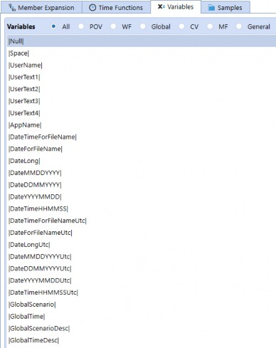
Figure 10.3
The radio buttons allow Users to quickly find the variable based on POV, Workflow (WF), the Global POV (Global), Cube View (CV), Member Filter (MF), and Substitution Variables unrelated to the above (General). Common uses include headers, footers, and custom names for rows or columns.
Reporting
Cube View Performance
I recommended a few common remedies for improving Cube View performance, but you’ve also got one last wildcard in the arsenal, just in case you’ve exhausted them: Application Server Configuration. These settings would need to be changed by the Azure team or the customer’s IT team, depending on who has access to the Application Server.
There are a number of settings that can be changed to optimize the responsiveness of Cube Views (see Figure 10.4). This is across the entire environment, so if there are Development, Test, and Production applications in one environment, it will affect all three applications.
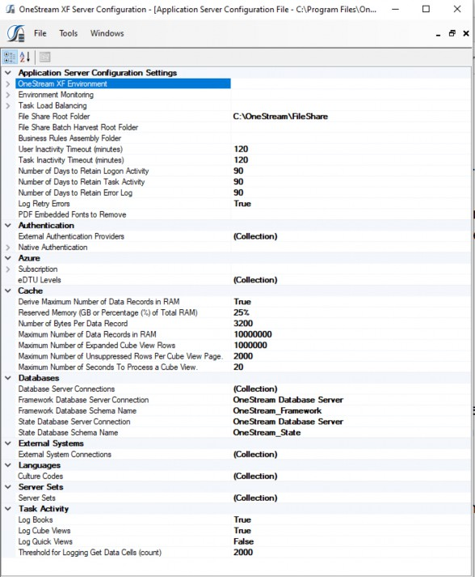
Figure 10.4
Reporting
Dashboards Overview
OneStream Dashboards are multifaceted and go beyond static data analysis. Dashboards provide additional functionality that far exceeds that of a Cube View or Spreadsheet Report. While those Reports are very common in every application, Dashboards provide additional reporting layers and functionality.
Dashboards use Data Adapters to generate higher-volume, custom datasets, and Components to display the data and provide controlled User interactions. Parameters help make the overall User Experience more dynamic in nature, and the Dashboard layout displays everything in a comprehensible and User-friendly format.
In their simplest form, Dashboards can house a variety of Reports allowing a User to tab through each one while doing analysis in OnePlace or a Workflow. Dashboards are used to help Administrators with application management, whether it is displaying audit information, Workflow status, or running a series of automated tasks. On a more advanced level, Dashboards provide detailed analytics using sophisticated data queries and calculations to drive results.
Given the vast possibilities that Dashboards offer, and their ‘choose your own adventure’ capabilities, it is the responsibility of the Dashboard designer to truly understand business needs, User requirements, and all contributing factors prior to building. The sections in this chapter highlight the pertinent information one needs when designing a Dashboard, the logical way in which a Dashboard should be constructed, and vital considerations that occur throughout the design and build.
Reporting
Determine Dashboard Purpose and Build Items
Dashboards might not always be the first obvious choice when reviewing your reporting options. This is why building a Report Inventory (as discussed at the beginning of the chapter) is so important. Your Inventory should include some detail around the Report’s objectives, User interaction, and anticipated outcomes.
Common reporting objectives that make Dashboards a good contender:
Data Location – the required data is stored outside of the Financial Model or in an external database. This could also include multiple data sources where you need to blend different datasets.
Multiple Reports – this includes taking a series of standalone Reports and organizing them into one Dashboard or displaying multiple Reports in one Dashboard view.
User Actions – this includes a high-level of User interaction such as filtering and drilling across multiple Reports or modifying and calculating data.
Now that you’ve decided to use Dashboards as a reporting tool and have an understanding of the Dashboard’s objectives, it’s time to start drilling down into the requirements and nitty-gritty details. All Dashboards begin with meticulous planning and a detailed blueprint. The more detailed you are, the better your Dashboard building experience will be.
Reporting › Determine Dashboard Purpose and Build Items
Data Consumption
Your Dashboard’s reporting objectives are directly related to data consumption, which is the way in which a User interacts with a Dashboard and its data. This is the basis upon which your design and build decisions are made. Based on your Report objectives, define the intended audience and what they need to do, view, or understand from the content presented on the Dashboard.
Reporting › Determine Dashboard Purpose and Build Items › Data Consumption
Static Analysis
Static Reports require minimal (if any) User interaction and have a ‘what you see is what you get’ display. These are ideal for gathering a collection of Reports and viewing them in one Dashboard, as displayed in Figure 10.5. This could be used to create a financial Report package for management analysis or assigned to a Workflow task for accessible reporting needs. Users can easily analyze this data and navigate from one Report to the next, but they cannot change or manipulate the view.
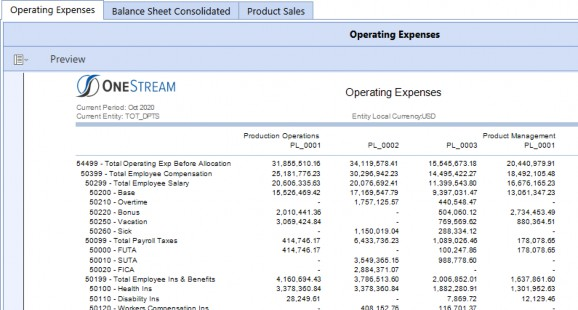
Figure 10.5
Reporting › Determine Dashboard Purpose and Build Items › Data Consumption
Interactive Analytics
Interactive analytics take static analysis a step further by giving Users the ability to slice the underlying dataset into a variety of customized views. For example, the Dashboard in Figure 10.6 allows Users to modify rows and columns, drill down, and apply filters based on how they want to see the data.
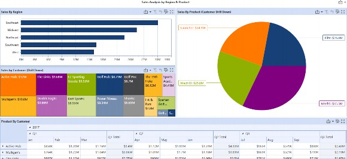
Figure 10.6
The Dashboard in Figure 10.7 is another example of interactive analytics where the Dashboard dynamically changes views, based on User selection. The Entity selection drives different Cube View results, and the selected Cube View data cell drives different source detail results.
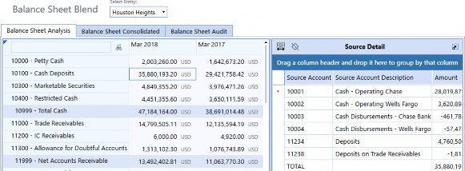
Figure 10.7
Reporting › Determine Dashboard Purpose and Build Items › Data Consumption
Functional Interaction and Analysis
Functional analytics incorporate interactive analysis with actual business processes and tasks. You can provide a controlled way for Users to modify and calculate data, run a series of system tasks, or navigate to other areas in the application. The Dashboard in Figure 10.8 is a Data Entry Form that allows the User to control multiple POV Members, enter data, calculate it, and see the calculated results.
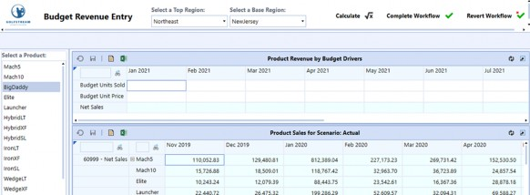
Figure 10.8
Reporting › Determine Dashboard Purpose and Build Items
Data Requirements
Now that you have an idea of the kind of Dashboard you need, it is time to take a deep dive into your data requirements. When analyzing data requirements, the first thing you need to understand is where the source data is stored. Dashboards can have multiple datasets derived from both internal and external data sources.
Data that is stored in the application or system database is considered internal. This includes data from the Cube, the Stage, a MarketPlace Solution as well as status and audit information.
| Tip: Some internal queries require you to know if the data is Application or System-related and the table(s) where this data is stored. Refer to the Database Screen (see Figure 10.9) located on the System Tab for a read-only view of how the Application and System tables are organized and the data fields in each table. |
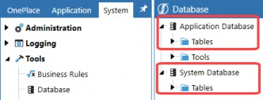
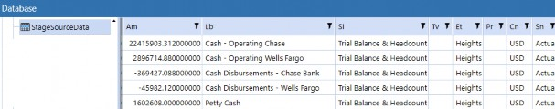
Figure 10.9
Using data from an external source means the data is not stored in the application and is therefore dynamically queried from an external database each time the Report is rendered. For example, you may want to use data from an external ERP system where the results directly relate to the application’s data and provide a greater level of detail. By contrast, you may want to look at a more operational dataset stored in a BI Blend database. The results may not directly relate to your financial data but could impact data assumptions or trends and change the way a User interacts with stored financial data.
External data queries require additional setup outside of the application. This includes creating a unique connection string via the Database Configuration Utility and an external database connection via the Application Server Configuration File. Refer to the OneStream Installation and Configuration Guide for more details on external database connection setup.
Using multiple datasets is a typical requirement and Dashboards do not limit you to just one source. You can use data blending to query data from various sources such as BI Blend and MarketPlace or Cube and Stage to do analysis all in one Dashboard. Data blending establishes relationships between the datasets to provide a greater level of granularity. For example, the Dashboard from Figure 10.7, in the previous section, is displaying two distinct datasets: one from the Cube and one from the Stage. The Business Rule in Figure 10.10, below, displays how the Dashboard’s data query was written using a Dashboard Dataset Business Rule and then called from a Method Query Data Adapter.
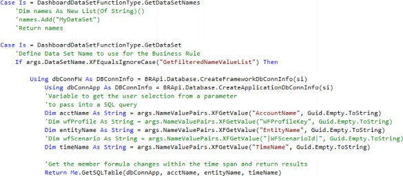
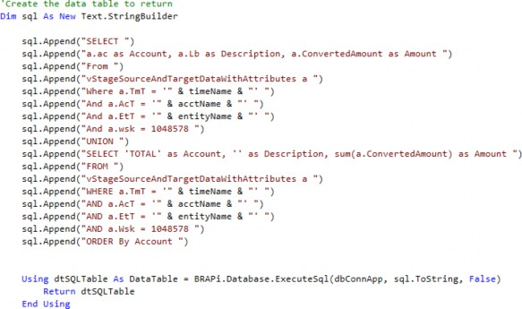
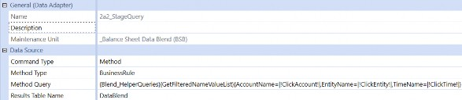
Figure 10.10
Dashboard Dataset Business Rules are designed to provide more flexibility by combining SQL and VB.Net into a customized data query, cache the dataset in memory for better performance, and – in some cases – are more User-friendly overwriting a SQL query directly into a SQL Data Adapter. This is OneStream’s recommended approach for writing custom data queries in Dashboards.
Dashboard Datasets are used in conjunction with Method Query Data Adapters. Method Queries provide another layer of flexibility as each predefined Method Type provides a set of variables and data results. This is helpful when building Reports with custom datasets, and the required syntax and results can be tested during the Data Adapter build. Refer to the OneStream Design and Reference Guide for more details on Method Query syntax.
Any time you are querying data, internal or external, it is important to understand the data volume and how this could impact overall Dashboard performance and usability.
A few things to consider while analyzing the size of the dataset(s):
How much data do you have in your data query results?
Will this dataset grow over time?
Are aggregations or calculations required to get the data results you need?
Are there data dependencies, and does one dataset drive the results of another?
Is the environment capable of managing high data volumes, and do you foresee any performance impacts?
This information is crucial to the overall functionality of the Dashboard, which is why it should be done before you start building. If you worked ahead and discovered the original plan doesn’t support the data requirements, it’s not too late to go back to the drawing board.
Reporting › Determine Dashboard Purpose and Build Items
Data Display and Layouts
Now that you’ve thoroughly assessed the data characteristics and how the User must interact with the data, it’s time to plot out how all the pieces will work together. If you have perused the various areas of a Dashboard Maintenance Unit or have already built a Dashboard, you probably noticed there is an extensive collection of Components as well as a variety of layouts. As you begin planning out the kind of Components to use and how the Dashboard’s layout should display these Components, decide how each piece of the Dashboard influences, modifies, or affects another part of the Dashboard and how this impacts the data. Determine the order of operations, the actions involved, and the anticipated results when the action is executed. This not only helps establish the Components and layout(s) you need, it provides some insight on the additional objects you may have to build outside of the Dashboard. If it’s more flexibility you need, you can throw in some parameters and strategically-placed Business Rules and – for a little flair – top it off with images, logos, and color palettes. This is where you and/or the group requesting the Dashboard may need some willpower. It is very easy to get caught up in everything a Dashboard can do, but that does not mean your Dashboard has to do everything.
The Dashboard in Figure 10.11 is the functional interactive example from earlier in the chapter. This was designed based on a functional interactive process. Each of the highlighted Components control a part of that process and have control over other areas of the Dashboard. For example, when a User selects a Top Region from the Combo Box, two actions occur: the Base Region
Combo Box selections update with the Top Region’s Children and the Actual Product Sales Cube View refreshes to display updated regional data. Selecting a Base Region or Product refreshes the Budget Drivers Form. In addition to choosing the right Components, the way they are presented to a User should complement the objective and easily guide them through each step without errors or performance issues.
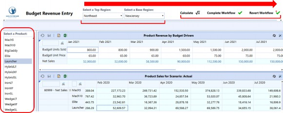
Figure 10.11
All Dashboards have a specific layout and, like Components, there is a variety of Dashboard layout Types which have different purposes and, for some, different display settings. The layout is the foundation upon which Dashboard objects are arranged, and while it tends to formulate near the end of the design phase, it is actually the first thing you should build. Some Dashboard layouts will only require minimal construction due to their data and/or User interaction requirements. These are more simplistic in nature because there aren’t any dependencies across each dataset (as displayed in Figure 10.5 previously).
Multi-Dashboard layouts require embedding a series of Dashboards into one main one to create what essentially looks like a single cohesive Dashboard.
This kind of layout is common in Dashboards that require an abundance of User interactions and, used correctly, can help with overall Dashboard performance and tend to be more functional.
Designed and constructed properly, Components and layouts can help control or avoid performance issues. However, if they do not support the data requirements or how the actions are arranged, you may run into some issues. When analyzing performance impacts, assess the query execution time, the amount of data loading, and the amount of data rendering. Some Components, such as the large pivot grid, are designed for extremely high data volumes. The large pivot grid is used for interactive analytics and can manage millions of data records.
These ‘simplistic’ layout tabbed Dashboard can be easily constructed; however, the amount of data in each tab could cause issues when running the Dashboard or when trying to navigate from tab to tab. Each Report running independently might have little to no performance issues, but once you begin adding more data per tab, this could result in a slower analysis experience.
These types of performance issues will require some additional thought and design considerations. How can you minimize the amount of data refreshes? This may be solved by embedding another Dashboard into the main Dashboard and specifying which one should be refreshed after a User interaction.
How can you display a large dataset in a Dashboard that is meant to be more functional? This may be solved by using a list box Component to align with displaying data in rows; however, it only shows slices of data to the User at one time, rather than everything at once.
Keep these benchmarks in mind as you confirm your approach:
Administrative maintenance – how much maintenance is required?
Usability – can Users easily navigate through the Dashboard(s), and is it intuitive?
Performance – is this the most performant design, and is it consistent with the growth of the dataset? Is there an alternative approach that provides better performance?
Presentation – is the content presented in a way that allows Users to easily consume it and achieve their reporting/process goals?
These are the things you do not want to sacrifice, nor justifications as to why the Dashboard isn’t laid out exactly how it was requested, or using a different process to get to the anticipated results.
Reporting
Dashboard Build Principles
The main objects for your Dashboard will be stored in a Dashboard Maintenance Unit, which should be one of the first things you create. The Dashboard Maintenance Unit (DMU) is a toolbox and organizes objects such as Data Adapters, files, parameters, and Components, and can store multiple Dashboard Groups and Dashboards.
Begin by building the Dashboard(s), their layouts and embed the Dashboards where applicable. Once the layout is complete, begin building the Dashboard items in a logical order; assign them to their respective Dashboard locations and test. This ensures each item is behaving as expected, and any issue is identified and resolved before moving onto the next section.
There are several options for building an embedded Dashboard structure and layout. Option one is to start with one that already exists and update it accordingly. It is very rare that one exists and just happens to align exactly; even if there are minimal similarities, starting with something of a shell beats the other option, which is starting from scratch.
In the event that there are no past projects or examples, or nothing comes close to the design requirement, option two is to use the Solution Builder located in the MarketPlace. The Solution Builder provides a variety of sophisticated layouts, some of which come equipped with built-in Buttons and Combo Boxes. This is a great option and gives a major headstart to any Dashboard project.
Click the Solution Builder link in the MarketPlace to access the Solution Builder screen. For more details on how to use this feature, refer to the Online Solutions Instructions, also located on the Solution Builder screen. Establish a universal naming convention. Naming conventions apply to multiple objects in OneStream, and Dashboards are no exception. Developing this early on will not only make it easier for those who are building a Dashboard but will also make maintenance easier if performed by a different group. The more sophisticated the design and layout, the more defined and consistent a naming convention should be. An effective naming convention will show how each object is related, whether it is assigned, embedded, or referenced in some way, and give a clear path to how any Dashboard was built.
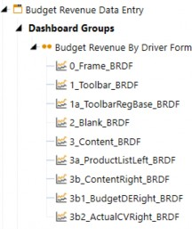
Figure 10.12
The naming convention in Figure 10.12 is automatically applied to any Layout Template designed with the Solution Builder. Using a simple number/letter system, it is easy to identify the Component and its respective Dashboard as well as how the Dashboards are embedded. The 0_Frame_BRDF Dashboard encompasses everything and can be run to get a complete picture of how the entire Dashboard looks and operates. The other Dashboard prefixes indicate how these are embedded, making it easy to understand where modifications need to be done. Apply these same conventions to the other Dashboard objects such as Components and parameters to show their relationship to each other, and to which Dashboard they should be assigned. In some cases, you might already have established Dashboard Maintenance Units with universal parameters. These can be referenced by other Dashboard objects or in other areas of OneStream, but if they relate specifically to one Dashboard project, it is best to store them in the respective Maintenance Unit and have them follow your standard naming convention.
Keep in mind that the DMU does not always store everything associated with the Dashboards. Items such as Data Management Sequences, Cube Views, and Business Rules are commonly used with Dashboards, but are stored, maintained, and extracted separately. Files used for button images or headers may be stored in the Application’s File Explorer, or another DMU, and parameters might also be stored in another DMU. These add up quickly, which is very important from a maintenance and migration perspective. Include this in the project documentation along with the impacts and/or dependencies one might have on an object in the overall Dashboard project.
Reporting
Conclusion
As you can see, reporting requirements and Report design all stem from the data and business processes performed in the application. Developing a Report Inventory provides clarity in your Report build plan, and the more you can identify, the better. Establishing these requirements early on in the project will help prepare you in selecting the best reporting mechanism to use, and the most effective way to meet the needs of the User.
Reporting
Epilogue
The Splash User Conference has always been a major focal point at OneStream. It showcases unique talent and expertise, and – year after year – it displays our overall success. The Splash bar is set higher and higher every year, and several OneStream teams work tirelessly to execute a show-stopping event. In the months leading up to the conference, it’s easy to get wrapped up in the stress and chaos of it all. In the blink of an eye, the countdown goes from 12 months to two days, and then the plane lands and it’s go-time. The months and months of preparing for Splash are done, and it’s time to see the finished product in real-time with a live audience. Every Splash happens so fast; there isn’t time to stop and think about how tired you are, how much your feet hurt, how your OneStream shirt fits, or even how hungover you might be. Chicago Splash will forever stand out in my mind because – as I walked into the Navy Pier for the keynote – it made me stop and marvel at what OneStream had become. I have always been overwhelmed with gratitude for the OneStreamers who work so hard, and I’m thankful to work with such a great group of people. In that moment, standing in the Navy Pier, I remember thinking, “Look at what we did.”